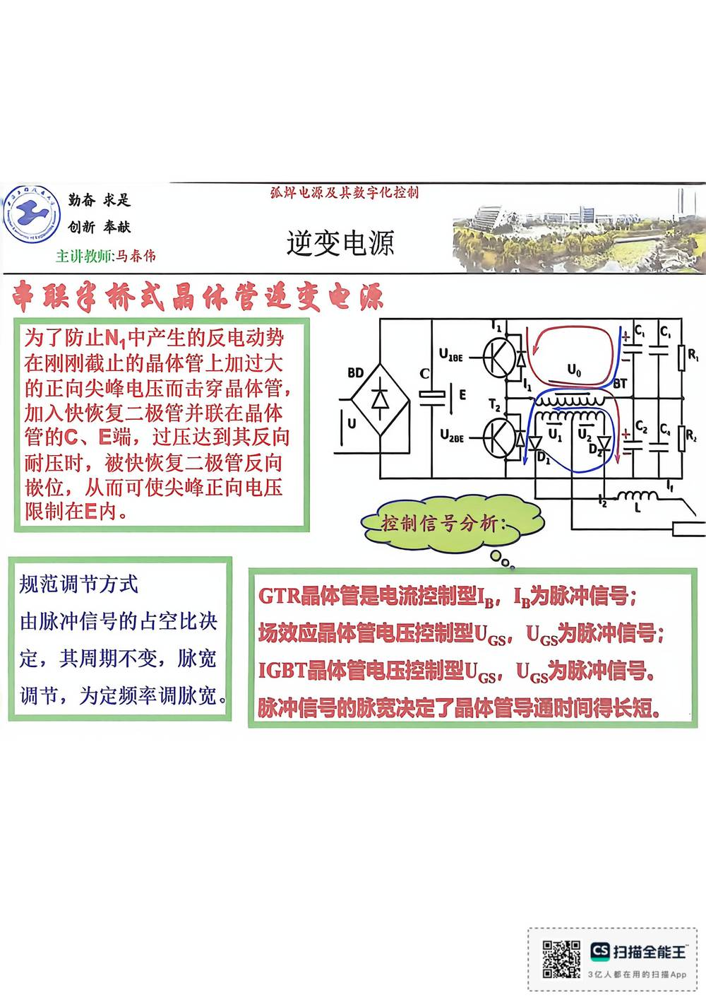

13 手写笔记/6~8周/h-w2-062 串联半桥式晶体管逆变电源
h-w2-062 串联半桥式晶体管逆变电源
📷 原图：
6~8周 焊接电源(差最后一节课)(1).pdf第 62 页（整页扫描，本库内嵌h-w2-062.jpg）
串联半桥式晶体管逆变电源

本页文字（OCR 整理）
- 串联半桥式晶体管逆变电源
- 为了防止N，中产生的反电动势
- 在刚刚截止晶体管上加过大
- 的正向尖峰电压而击穿晶体管，
- 加入快恢复二极管并联在晶体
- 管C、E端，过压达到其反向
- 耐压时，被快恢复二极管反向
- 嵌位，从而可使尖峰正向电压
- 限制在E内。
- 控制信号分析：
- 规范调节方式
- 由脉冲信号占空比决
- 定，其周期不变，脉宽
- 调节，为定频率调脉宽。
- GTR晶体管是电流控制型Lp，「为脉冲信号；
- 场效应晶体管电压控制型Ucs,Ucs为脉冲信号；
- IGBT品体管电压控制型Ues,Ucs为脉冲信号。
- 脉冲信号的脉宽决定了晶体管导通时间得长短。
OCR 说明
文字由 macOS Vision 识别手写体/翻拍页面得到，错字难免（如"弧"误识为"孤"）；重点标记据此推断，请以页图为准。
对应讲义页
- p157 · 优点：输入端只需要较小的电压
关联
- ← 上一页 · 总览 · 下一页 →
- 讲义：00 第4章 电子控制型 导航 · 概念：04 概念地图